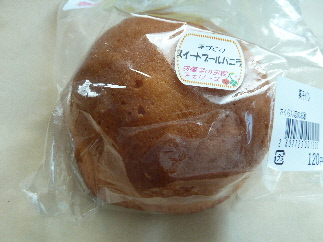
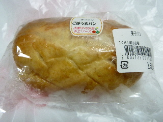
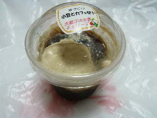

チェリーズ（江津市）のスイートブールバニラ
更新日 : 2013/07/20

梅花酵母使用のパンですね。以前新聞に地元の梅花酵母で商品を作りませんか？って記事を読んだような気がします。
ここで活用されてたんですね。
酵母がどうのは分かりませんでしたが、普通にスイートブールで、パクパクいただきました。
島根県江津市桜江町谷住郷1713-1
更新日 : 2013/07/20

梅花酵母使用のパンですね。以前新聞に地元の梅花酵母で商品を作りませんか？って記事を読んだような気がします。
ここで活用されてたんですね。
酵母がどうのは分かりませんでしたが、普通にスイートブールで、パクパクいただきました。
更新日 : 2012/07/22

お菓子お店チェリーズのゴボ天パンです。
パンの中に、ゴボ天がドーンと入っていました。
ゴボ天って味が濃いですねー。パンなんですが、口の中はゴボ天味でいっぱいになりました。
更新日 : 2012/07/22

サンピコごうつで買いました。
アンコが沢山入ったコーヒーゼリーです。クリームも入ってて凝った作りですね。アンコたっぷりで甘くて美味しかったです。
コーヒーゼリーが食べたい人にはちょっと物足りないかも？